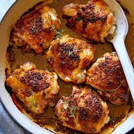

Baked Chicken

Follow this recipe if you want to cook this amazing yet simple dish that the whole family will enjoy.
Ingredientss
- Boneless, skinless chicken breasts: You can either purchased fresh (my preference) or frozen (which you will need to completely thaw before using). Some chicken also comes pre-brined nowadays, in which case you can skip step one below.
- Butter or olive oil: Your pick! I like the extra flavor of butter, but olive oil will also work well.
- Kosher Salt: An essential ingredient in our brine, and also to season the chicken.
- Seasonings: I included an all-purpose blend of smoked paprika, garlic powder, salt and black pepper in the recipe below, which is super-simple and goes with just about anything. But feel free to sub in any dry seasoning blend that you prefer.
Steps
- Brine
I’m telling you — this step is an absolute must for anytime you want to bake chicken breasts in the oven. Brining chicken is super-easy, it makes your chicken extra juicy, and best of all, it can be effectively done in just 15 minutes. Plus, if you brine chicken in lukewarm water, it also helps bring the chicken to room temperature, which makes for more even cooking. Win-win!
To brine chicken, simply fill a big bowl with lukewarm (not hot) water. Stir in a handful of salt until it mostly dissolves. Then add your chicken breasts and let them sit in the saltwater to brine for at least 15 minutes. If you are doing this in advance, you can cover and refrigerate the bowl of chicken and saltwater for up to 6 hours. But you don’t want to let the chicken brine for much longer than that.
- Brush
…your chicken breasts with melted butter. Or at least, I highly recommend using butter. It adds great flavor and helps give a nice golden crust on the outside. But if you’d rather use olive oil (or another favorite cooking oil), feel free.
Brush the breasts liberally on both sides to prevent the chicken from sticking to the pan, and also to help the seasonings stick. Then place the chicken breasts in a large baking dish or roasting pan.
- Roast
So this is the step that causes some squabbles amongst chicken lovers — how long to bake chicken breasts? And what is the correct temperature to bake chicken? Do you bake it low and slow (as in, 30 minutes at 350°F)? Or do you roast chicken high and quick (as in, 15 minutes at 450)? I have tested out both — and just about every interval in between — dozens upon dozens upon dozens of times. And in the end, I fall firmly in the latter camp when it comes to baked chicken.
I like to roast my chicken breasts on high heat. ?
Depending on the thickness of your chicken breasts, roasting chicken at 450°F should require a cooking time of about 15-18 minutes (depending on the thickness/size of your chicken breasts). It’s speedy and it’s easy. But mostly I love it because cooking at high heat quickly develops a nice crispier “crust” on the outside of the breasts, which also helps to lock in those juices and keep the oven roasted chicken perfectly tender on the inside. It’s the best of both worlds.
I highly recommend investing in a small cooking thermometer to measure the cooked chicken temp in order to tell if it is ready to go (the FDA says that the safe cooked chicken temp is 165°F), versus cutting into it with a fork, which lets those good juices seep out. I use this instant-read thermometer (affiliate link) that I bought on Amazon for $10, and it will accurately measure your internal chicken temperature in seconds.
- Rest
This one is a non-negotiable. You must, must let your beautifully baked chicken breasts rest before cutting into them — a tip which applies to cooking any meat, really. If you cut in right away, you will lose all of the amazing juices and some of the tenderness that we’re going for. But if you give your freshly baked chicken breasts a brief rest, it will finish cooking and lock in all of those delicious juices, resulting in the most tender and juicy and delicious baked chicken.
I recommend loosely tenting a sheet of aluminum foil over the pan to keep the heat in while the chicken rests. And then after 5-10 minutes, you can finally serve and enjoy your perfectly-cooked chicken breasts.
And enjoy every last bite.